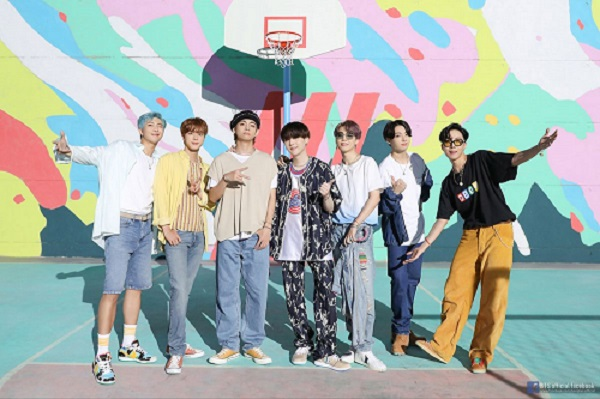

BTS in a Nutshell Who are these 7 men that you see everywhere?
What is BTS?
BTS is a 7 member boyband from a small company in South Korea. First debuting on 13 June 2013,
their name is an acronym which stands for 'Beyond The Scene'. Though popular worldwide,
their music is mainly in their native language, Korean, releasing their first fully English song only in 2020.
Their success is opening doors for artists and media which is not primarily in English and is proving that music
doesn't
have a language.
What do they do?
What do they Not do would be an easier question to answer! Singing, Dancing, rapping and doing them all at
the same time, BTS are often called powerhouse performers for their mesmerizing choreography, concepts and set
design. Have a look at one of their performances and be the judge yourself!
Who are the 7?
BTS consists of 3 rappers and 4 vocalists. RM is the leader and along with Suga and
J-Hope forms the Rap Line. Jin, V, Jimin and Jungkook form the vocal Line. Each
with a distinct personality of their own, the boys from humble beginnings have a friendship so close that you
would think they are siblings.
/ 7
Click to view

Are they popular?
From collaborating with artists like Halsey, Chainsmokers, Lauv and Troye Sivan, to being nominated for a Grammy
in 2020, they have several videos on youtube with over 500 million views. Their huge fanbase, known as ARMY
are of diverse backgrounds, ages and ethnicites and span multiple countries. It isn't difficult to see something
related to BTS trending on twitter on any given day.
What is their message?
From the beginning of their journey to present day, BTS has been a source of comfort for people, young and old.
Their albums which began with themes of rebellion have evolved to that of encouragement, to Love Yourself and to
understand and speak yourself. Through their music and their collaboration with organisations like the UNICEF,
they have always strived to create a safe space filled positivity. At the end of the day, whether it be for their
music or just their incredible sense of humour, there is something for everyone when you give them a chance. If
you would like to know more about them, then feel free to explore the other parts of our website!